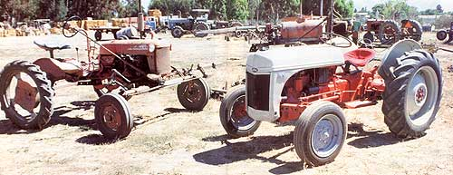
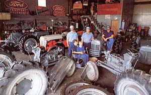
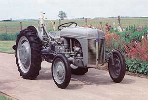
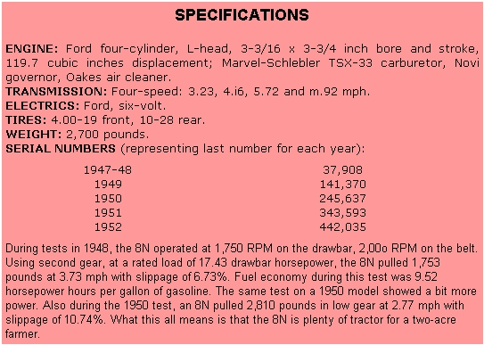
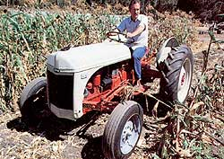

The Classic Tractor
Restoring a Ford 8N tractor, including facts, figures, advice, specifications.
By Albert Manchester
November/December 1990
WATCHING A NEIGHBOR CUT ALFALFA several months ago, I got to wondering if there might be such a thing as a classic working tractor. My neighbor was driving an enormous John Deere. What 'l had in mind would be fairly small, and suitable for the needs of what we around here call a "two-acre farmer" someone with just enough land to need a tractor with some real muscle. It would have to be inexpensive, and preferably vintage-the kind of machine an owner could restore over the winter, much as a car buff might spend weekends polishing every nut and bolt of a '57 Chevy.
The Ford 8N was introduced in 1947, and 442,035 were built between then and 1952.
In my search for a classic tractor, one model, no longer manufactured, popped up in every conversation with friends, neighbors and farm machinery dealers: the Ford 8N.
I can see two of them from my house. One tractor restorer I spoke with said in some parts of the country "you can see 8Ns sitting on top of every hill." That shay just be a big hunk of country hyperbole. But I do know for certain that you can find 8Ns all over this New Mexico valley, some of them looking almost new in fresh coats of Ford red and Ford gray. A rancher I know has three tractors. The one he depends on is the 8N:
He knows how to fix it.
The Ford 8N was introduced in 1947, and 442,035 were built between then and 1952. The majority of them are still running. The 8N was the last of a series of tractors-the N-series-built by Ford starting in 1939, the first two being the 9N, made through 1942, and its successor the 2N, built through 1947. These first tractors were made in partnership with the Ferguson company, hence, they are generally referred to as Ford Fergusons.
The two companies suffered an acrimonious parting of the ways in the late 1940s, at which time Ford decided to turn out a tractor that could be kept running with "six socket wrenches, a pair of pliers and a screwdriver." Ford knew the market and catered to it. This was a time when folks expected to take care of their vehicles without expensive help from the dealership. Ford had already been making automobiles for those people for decades.
The 8N is, in fact, a "modem" tractor in that it was one of the first to use the three-point hitch-now standard on any tractor. It will accept all modern implements, and many are still going to work every day for farmers. A couple of old hands told me that, in their opinion, the 8N may well be the best tractor ever made.
One old-timer I met, now retired, bought two 8Ns new in 1948, and he used them to farm 350 acres of cotton, chiles, lettuce, onions and a grove of pecans. In season, his 8Ns would run 12 hours a day, five days a week. Saturdays, he washed and serviced them. He used just those two 8Ns for decades, until, as far as he was concerned, they were hopelessly worn and outdated, so he "traded up" to larger, diesel powered machines.
THE LARGER TRACTORS, he said, made the work faster, but that, as far as he was concerned, was their only advantage. The 8N, he added, will bum a gallon of gas an hour, and it will only have to be refueled about every eight hours. He said he could cultivate 25 acres of cotton in 12 hours with one. The 8N is not an antique of limited utility; it can do the same amount of work, the same kind of work, that any modern tractor can do.
Where I live, for instance, most of the land is irrigable, and except for large farms, most of it is held by families who have two- to five-acre spreads-places where a small, gasoline-powered tractor works quite nicely. Because some crops require more water than others, fields are separated by borders raised by "border discs." Cutting a border requires more tractor guts than most two-acre farmers ever need otherwise, but the N-series tractors raise them with ease. The 8N may be old, but it holds its own. Despite its age, I'm convinced the 8N is all the tractor that most part-time farmers will ever need.
Like its older sister, the Ford Model A car, the 8N was built to be an everyman's vehicle: inexpensive, and simple enough to be maintained by the owner. (Ford used to send along a packet of tools with every car it sold.)
The Model A comparison is even more apt, in fact, because the 8N's four-cylinder L-head engine is essentially a Model A engine. The design goes back at least 75 years and is just about as simple as a four-cycle engine can get. If you think you can master a few of the automotive secrets of the first 30 years of the Motor Age, you should be able to restore and maintain an 8N all by yourself.
The 8N engine is better-built than the Model A engine in a few respects: The block is heavier (which helps to dissipate heat better, and it has more displacement (giving more power. More significant, the cylinders are sleeved: lined with a metal cylinder, so the sleeves wear out rather than the block. During a major overhaul, worn sleeves are knocked out and replaced by new ones. Voila! New engine. Well, you also have to remember to grind the valves, put in new piston rings and replace the bearings. Which means you have to find the parts. Since Harry Truman was president in the years the 8N was built, and since I'm starting to remember those years in black and white and shades of gray, I wondered at first: Are parts available?
One fellow I met during my pilgrimage to find the classic tractor turned out to be something of an 8N expert. He drives around the country buying old tractors, hauls them back to New Mexico, restores and then sells them. One thing he knows a lot about is parts for 8Ns. Yes, they're available. For one thing, so many Model As are still around that new parts are still being made for them. In fact, many 8N components are so common in automobiles that you won't have to go any farther than your local car parts store for what are known as "crossover" parts. These places are generally less expensive than a tractor dealership.
In any case, should you decide to restore an 8N, you can be assured that you won't have to drive around the countryside looking for a derelict 8N to cannibalize. Just head down to the store. You're not likely to find many 8Ns sinking into sunflower patches anyway, and any broken veterans you do come across may be worth as much as $1,000-certainly no less than $600. They're still that valuable for their salvageable parts.
A nicely restored 8N brings up to $3,00o here in New Mexico. In Oklahoma, one large used-tractor dealer had 212 tractors on his lot, and 28 of them were 8Ns. All ran, none was restored and they ranged in price from $1,050 to $2,025-and the cost keeps rising. The $1,500 machine of a few years ago is now up to $2,500. Almost sounds like a good investment, doesn't it?
The 8N has it all over the 9N and 2N in several respects (for one thing, there are more of them around, but the main difference, as far as I'm concerned, is that the 8N has four speeds instead of three. The 8N is really considered the Cadillac of the trio, as well as a true classic of its day. The 8N is still prized for its handling, simplicity, availability of spare parts-even for its looks.
If you need a tractor, and you're looking for a winter project, an 8N restoration will most likely fill the bill. Back the veteran into the barn in October. Drive out in the spring, ready to go to work with your spruced-up American country classic. So maybe it's not a '42 Lincoln Continental or a '48 Indian Chief. But your classic won't languish in a garage, covered by sheets. Your classic is going to earn its keep.
Albert Manchester is a free-lance writer living in the Mesilla Valley of New Mexico.
Is the 8N the right tractor for you?
Facts, figures and some advice
Bruce Wyman uses as 8N on his three-acre spread is the Sierra Nevada foothills.
SEVERAL YEARS AGO,a couple of fellows who wanted to make a statement about conservation and automotive simplicity drove a 1929 Model A Ford from Alaska to Argentina. Their magnificent gesture was noticed by almost no one except the nice people they met along the way. It was a tough trip; obviously, a modem four-wheel drive would have been more effective.
Similarly, any farmer knows that a modem diesel tractor is more "cost effective" than an 8N for a large spread. These days, you won't find many small, gasoline powered tractors working in large fields. However, just as the Model A may be a fine weekend car for an auto buff, the 8N tractor is perfectly adequate for most part-time farmers. A lot depends on how much work you have to do.
But before you spend months finding and restoring an 8N, you should be aware of its limitations. After all, most Model A aficionados know exactly what they'll wind up with before they start rebuilding one. The N-series tractors, although considered the first of the modern tractors, do not have a "live" clutch (that is, the power takeoff doesn't work when the clutch is engaged). Folks who have never driven any other kind of tractor and experienced operators accustomed to the N-series do not find this a problem. It's simply an idiosyncrasy of an obsolescent machine. You learn to work with what you have.
If you'll need a wet (hydraulic) line for other machinery (a wood sputter, for example), keep in mind that the 8N was not intended for such an adaptation. However, one tractor dealer I talked to said he once saw an 8N jury-rigged to take a wet line, so if you have a friend who knows hydraulics, just possibly your 8N could be so rigged. They do have power takeoffs, of course.
Many of the tractors that came after the 8N, such as Ford's Jubilee, can be adapted for a wet line and have a live clutch. And the Jubilee's overhead valve engine puts out a bit more horsepower. But these tractors, which which may cost you a few hundred extra, are also more complex machines. As with most of our contraptions, the more recent they are, the more complicated they can be.
As I mentioned before, of the N-series, the 8N is preferred because of its availability, its four-speed transmission (as opposed to the three speeds of the 9N and 2N) and the fact that it is newer. Any other mechanical differences are considered inconsequential by people who know tractors. In fact, many owners do not know there are any differences at all between the N-series tractors, and refer to them all as 8Ns. But true connoisseurs will tell you that the 8Ns-especially those from 1950 and later with the side-mounted distributor are the most prized machines of the bunch.
You can pick out the 8N easily, just as the pros do: The diameter of the lug-nut pattern on an 8N is only 6-1/2 inches; it's much larger on a 9N or 2N. Also, the 8N has full floorboards, rather than footpegs like a motorcycle. And its clutch is on the left, with both brake pedals (to steer under load by slowing one rear wheel or the other) on the right, allowing clutch and brakes to be used together. Once you know these tricks, you can tell Ns apart from as far away as you can see them.
The 8N has no endemic problems, but as with any very old automotive machine, you have to look it over from bow to stern. A dealer will shake rear wheels and check steering for excessive play. But even if a tractor does have a lot of play in those areas, the problems can be fixed. You may want to check the hydraulics by standing on the two arms of the three-point hitch. If it will lift you, the hydraulics are probably OK.
For restoration and maintenance, the FO-4, shop manual-the 8N bible-is clearly written, has plenty of illustrations and is available from most Ford tractor dealers for about $12.
If you buy your tractor from anyone other than a dealer, get a proper, notarized bill of sale. Unlike automobiles, tractors need not be registered in most states, and so they do not have "papers." Make sure you're buying the tractor from the real owner.
Autumn is the best time to buy a tractor. In the spring, most are being used for planting, so prices are higher. People usually part with their unwanted equipment in the fall; that way they don't have to winter it through the rough months.
|
 Dwight Emstrom A rebuilt Ford 8N (below), shown at Ardenwood Historic Farm, a working turn-of-the-century farm in Fremont, California. |
 Dwight Emstrom Dwight Emstrom (top center), of Galesburg, Illinois, with family, friends and Ford tractors. |
 Dwight Emstrom's tractor collection includes this Ford-Fergusoa 9N-;as 8N predecessor. |
 More thaw half the 8Ns built, including this one, till work for a living. |
 |
 |